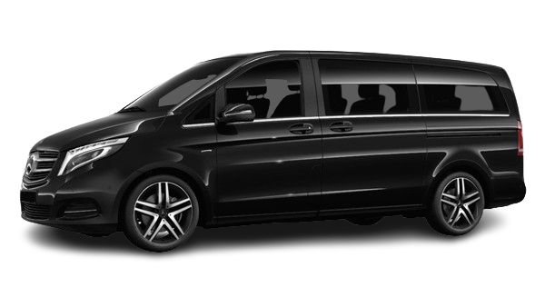

✈
Transfert Aéroport
Notre cœur de métier : les liaisons avec tous les aéroports de Paris — CDG, Orly, Beauvais et Le Bourget. Accueil en zone d'arrivée, suivi des vols en direct et aide aux bagages, quel que soit votre terminal.
VTC haut de gamme · Tous les aéroports de Paris
ASC Driver vous transfère vers tous les aéroports parisiens — Roissy-CDG, Orly, Beauvais et Le Bourget — à bord de Mercedes Classe E, V et S. Un chauffeur privé ponctuel et discret, pour vos départs comme vos arrivées, dans tout Paris et l'Île-de-France.
Nos prestations
Voyage d'affaires, déplacement privé ou événement particulier : ASC Driver vous réserve un service sur mesure et raffiné, au départ et à destination de tous les aéroports parisiens — CDG, Orly, Beauvais et Le Bourget.
Notre cœur de métier : les liaisons avec tous les aéroports de Paris — CDG, Orly, Beauvais et Le Bourget. Accueil en zone d'arrivée, suivi des vols en direct et aide aux bagages, quel que soit votre terminal.
Un chauffeur attitré, à l'heure ou à la journée, pour vos rendez-vous, votre shopping ou vos visites dans tout Paris et sa région.
Mariages, séminaires, galas, salons : une prestation prestige avec chauffeur en costume pour les moments qui comptent vraiment.
Vers Disneyland, Versailles, la Normandie ou n'importe quelle ville de France : détendez-vous, nous nous occupons de la route.
Confidentialité, ponctualité et tranquillité pour vos équipes et vos clients. Facturation entreprise et compte dédié sur demande.
Gare du Nord, de Lyon, de l'Est ou Montparnasse : une liaison rapide et confortable entre les gares de Paris et votre adresse.
Les aéroports desservis
Quel que soit votre aéroport, votre chauffeur ASC Driver vous attend en zone d'arrivée, pancarte à votre nom. Nous suivons votre vol en direct pour caler la prise en charge sur votre atterrissage réel — sans stress et sans attente inutile.
Le plus grand aéroport de Paris, à ~25 km au nord-est. Tous les terminaux (1, 2A à 2G, 3) : vols internationaux, long-courriers et européens.
Le plus proche du centre, à ~15 km au sud. Terminaux Orly 1 à 4 : vols nationaux, européens et internationaux, à une vingtaine de minutes de Paris.
Beauvais-Tillé (~85 km, vols low-cost Ryanair, Wizz Air) et l'aéroport du Bourget, dédié à l'aviation d'affaires. Nous assurons les deux.
Avion en avance ou retardé ? Aucune inquiétude : le temps d'attente est offert et ajusté automatiquement, votre vol étant suivi en continu, jour et nuit.
Notre flotte Mercedes-Benz
Un parc Mercedes récent et méticuleusement entretenu, équipé pour faire de chaque transfert aéroport un moment aussi agréable que serein.

L'équilibre idéal entre élégance et confort pour vos trajets aéroport, professionnels comme personnels.

L'expression ultime du luxe automobile, pour une expérience de voyage sans équivalent.

Vaste et élégant, le compagnon idéal des familles, des groupes et des voyageurs chargés de bagages.
Chauffeur déjà sur place, vols suivis en direct et marge de sécurité prévue : vous n'attendez jamais.
Tarif fixé dès la réservation, sans surprise : aucun supplément bagage, aucun frais caché.
Des chauffeurs chevronnés, discrets et en tenue, qui connaissent Paris et ses aéroports par cœur.
Réservation à toute heure, 7j/7, jours fériés inclus, pour tous les vols, même de nuit.
Zones desservies
Depuis CDG, Orly, Beauvais ou Le Bourget, nous vous conduisons partout dans Paris, en Île-de-France et bien au-delà. Parmi nos liaisons les plus demandées : navette aéroport ↔ Gare Montparnasse, aéroport ↔ La Défense et aéroport ↔ Disneyland Paris.
Votre destination n'est pas listée ? Nous organisons tous vos trajets sur mesure — demandez votre devis.
Tarifs indicatifs
Des forfaits indicatifs pour les liaisons les plus demandées vers chaque aéroport parisien. Pour un tarif personnalisé, contactez-nous ou utilisez notre formulaire de réservation.
* Prix TTC indicatifs ; ils varient selon l'aéroport, l'horaire, la distance réelle et la disponibilité. Le tarif définitif est confirmé à la réservation.
Tarification transparente
Chez ASC Driver, le prix d'un chauffeur privé est un forfait fixe, annoncé et garanti dès la réservation — quel que soit l'aéroport. Aucun compteur, aucune mauvaise surprise à l'arrivée.
Bagages, péages, carburant et TVA sont déjà compris. Le prix chauffeur privé affiché correspond très exactement à ce que vous réglez.
60 minutes d'attente offertes à l'aéroport (45 min en gare) : de quoi absorber sereinement un vol ou un train en retard.
Le tarif dépend de l'aéroport, de la distance, de l'horaire et de la classe choisie : Berline E, Première classe S ou Van V.
Vous voulez le prix exact de votre trajet ? Demandez un devis gratuit, sans engagement — réponse rapide assurée.
Réservation
Indiquez votre aéroport et votre trajet ci-dessous : nous confirmons rapidement votre course et son tarif ferme. Pour une demande urgente, un simple appel suffit.
Questions fréquentes
Quel que soit l'aéroport parisien — Roissy-CDG, Orly, Beauvais ou Le Bourget — votre chauffeur vous accueille en zone d'arrivée, une pancarte à votre nom à la main. Nous suivons votre vol en temps réel : en cas de retard, l'attente est ajustée sans supplément.
Oui : le tarif est fixé et garanti dès la réservation, sans supplément bagage ni frais caché. Le devis ferme vous parvient avant toute confirmation.
Nous faisons le maximum pour les demandes de dernière minute, selon nos disponibilités. Le plus simple : nous appeler directement au +33 6 51 24 91 33.
Espèces, carte bancaire et virement (comptes professionnels). Le règlement se fait à bord ou en amont, selon votre préférence.
Oui, sur demande et sans supplément. Indiquez l'âge de l'enfant à la réservation pour que nous installions le rehausseur ou le siège adapté.
Nous desservons l'ensemble des aéroports de Paris : Roissy-Charles de Gaulle (CDG), Orly, Beauvais-Tillé et Le Bourget. Nous assurons également les trajets longue distance dans toute la France (Disneyland, Versailles, la Normandie...).
Réservez dès aujourd'hui votre transfert aéroport d'exception.